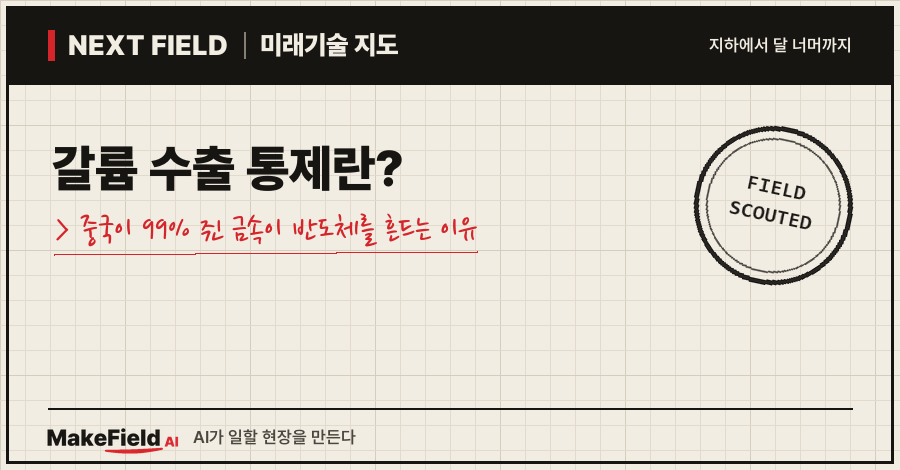
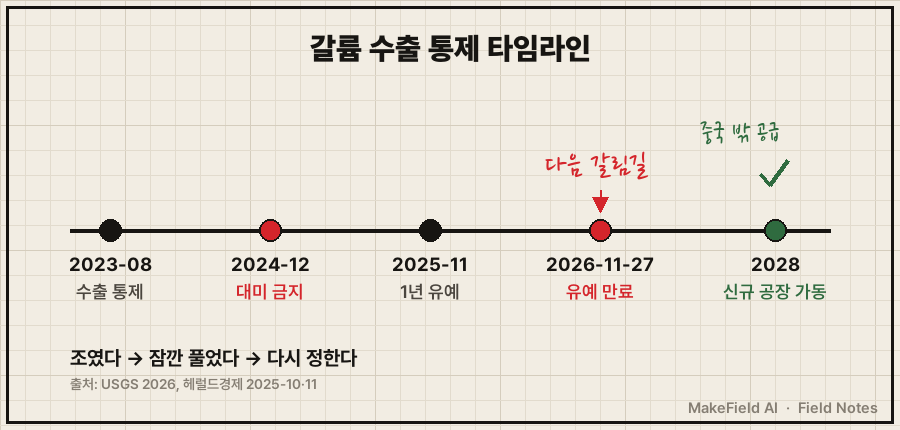
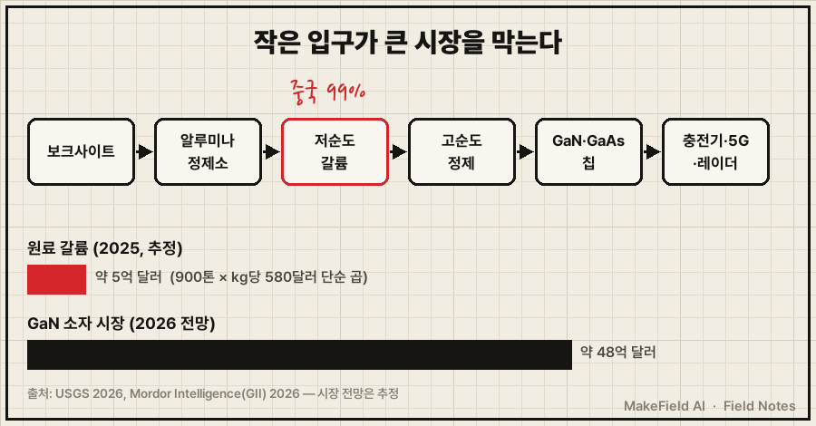
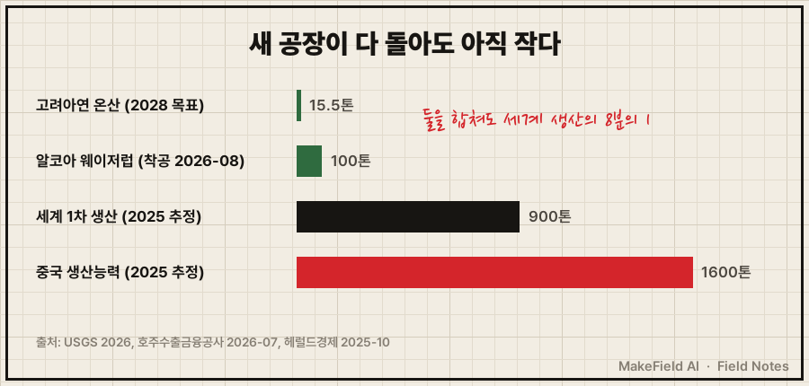

한 줄 요약: 갈륨은 세계 1차 생산의 99%를 중국이 만드는 금속이고(미국 지질조사국 USGS 2026), 중국이 2024년 12월 내린 대미 수출 금지는 2026년 11월 27일까지만 유예된 상태예요(헤럴드경제 2025-11). 스마트폰 고속 충전기, 5G 기지국, 군사 레이더에 들어가는 질화갈륨(GaN) 반도체가 모두 이 금속에서 출발합니다.
갈륨 수출 통제 뉴스는 "중국이 또 광물을 무기로 썼다"에서 끝나는 경우가 많아요. 그런데 돈의 흐름으로 보면 더 흥미로운 질문이 생깁니다. 연간 1,000톤도 안 되는 금속이 어떻게 수십억 달러 반도체 시장의 목줄을 쥐게 됐을까요. 2026년 10월 기준으로 쉬운 말로 풀어 볼게요.
1. 갈륨이란 무엇이고, 어디에 쓰이나요
갈륨이란 알루미늄 원료(보크사이트)를 정제할 때 아주 조금 섞여 나오는 은색 금속이다. 단독 광산이 거의 없고, 다른 금속을 만들다 '덤으로' 건지는 부산물이에요. 보크사이트 속 갈륨 함량은 평균 50ppm, 즉 원광 1톤에 50그램 정도입니다(USGS 2026).
💡 보크사이트 — 알루미늄을 만드는 붉은 광석. 여기서 알루미나(산화알루미늄)를 뽑고, 그걸 녹여 알루미늄을 만든다.
💡 부산물 — 주 제품을 만들다 함께 나오는 물질. 쌀을 찧을 때 나오는 쌀겨처럼, 따로 캐지 않고 공정 중에 건진다.
갈륨은 그대로 쓰기보다 질소·비소와 결합한 화합물 반도체로 씁니다.
| 화합물 | 어디에 쓰이나 | 실리콘 대비 강점 |
|---|---|---|
| 질화갈륨(GaN) | 고속 충전기, 5G 기지국, 데이터센터 전원, 레이더 | 높은 전압·주파수에서 손실이 적다 |
| 갈륨비소(GaAs) | 휴대폰 통신칩, 레이저 다이오드, LED, 우주용 태양전지 | 빛·고주파 처리에 강하다 |
💡 질화갈륨(GaN) — 갈륨과 질소로 만든 반도체 재료. 같은 일을 실리콘보다 작고 뜨겁지 않게 해서, 요즘 손바닥만 한 고속 충전기가 가능해졌다.
미국의 경우 갈륨 소비의 73%가 집적회로(칩), 26%가 LED·레이저 같은 광소자에 쓰였어요(USGS 2026). USGS는 국방용 일부 분야에서는 "GaAs와 GaN을 효과적으로 대체할 재료가 없다"고 적고 있습니다. 미 해군 AN/SPY-6 레이더도 GaN을 씁니다(CSIS 2023).
2. 왜 지금 갈륨 수출 통제가 문제가 됐나요
생산이 한 나라에 99% 몰려 있는데, 그 나라가 2023년부터 수출 문을 단계적으로 조였기 때문이다. 세계 1차(저순도) 갈륨 생산량은 2025년 약 900톤(추정)이고, 그중 99%가 중국산이에요(USGS 2026). 중국 밖에서 1차 갈륨을 만드는 나라는 일본과 러시아 정도이고, 독일·헝가리·카자흐스탄은 2013~2016년에 생산을 접었습니다(USGS 2026).
💡 1차 갈륨 — 광석 정제 공정에서 처음 뽑아낸 저순도 갈륨. 이걸 다시 정제해 반도체용 고순도로 만든다.
수출 통제는 세 단계로 진행됐어요.
| 시점 | 무슨 일이 있었나 | 출처 |
|---|---|---|
| 2023-08 | 중국, 갈륨·게르마늄 수출 통제 시행 | USGS 2026, Fastmarkets 2025-11 |
| 2024-12 | 중국, 미국으로의 갈륨 수출 전면 금지 | USGS 2026, Fastmarkets 2025-11 |
| 2025-11-09 | 대미 수출 금지를 2026-11-27까지 유예. 군사 사용자·군사 용도 수출 금지는 유지 | 헤럴드경제 2025-11 |
| 2026-11-27 | 유예 만료 예정일 | 헤럴드경제 2025-11 |
💡 수출 통제 — 특정 물자를 수출할 때 정부가 허락·심사를 거치게 하는 조치. 전면 금지보다 한 단계 약하지만, 정부가 마음먹으면 언제든 서류를 멈출 수 있다.
💡 이중용도 물자 — 민간에도 군사에도 쓰이는 물자. 갈륨이 대표적이라 각국이 수출을 따로 관리한다.
효과는 가격에서 바로 보였어요. 미국이 수입한 갈륨 금속의 평균 단가는 2025년 kg당 580달러로, 1년 전보다 약 30% 올랐습니다(USGS 2026). 2023년 8월 통제 이후 중국에서 미국으로 통제 품목이 직접 수출된 기록이 없었다는 보도도 있어요(Fastmarkets 2025-11).

3. 돈의 흐름 — 누가 사고, 누가 파나요
작은 원료 시장이 수십 배 큰 반도체 시장의 입구를 쥐고 있는 구조다. 원료 갈륨 자체는 생각보다 작은 시장이에요. 2025년 세계 생산량 900톤에 미국 수입 평균 단가 kg당 580달러를 곱하면 약 5억 달러가 됩니다(추정 — USGS 수치를 단순 곱한 값이며 지역별 가격은 다름). 반면 GaN 소자 시장은 2026년 약 48억 3,000만 달러, 2031년 약 105억 5,000만 달러로 전망돼요(Mordor Intelligence, 2026 — 시장조사 추정).
💡 소자 — 칩·트랜지스터처럼 전기 신호를 다루는 반도체 부품 단위.
| 단계 | 누가(예시) | 무엇을 사고파나 |
|---|---|---|
| 원료 | 알루미나 정제소·아연 제련소(중국 다수, 알코아·고려아연 신규) | 공정 부산물에서 저순도 갈륨 회수 |
| 정제 | 고순도 정제 업체 | 저순도 → 반도체용 고순도 갈륨 |
| 웨이퍼·칩 | 화합물 반도체 회사(인피니언, ST마이크로, 퀄보 등이 시장조사 보고서의 주요 기업으로 거론) | GaN·GaAs 웨이퍼와 칩 |
| 최종 수요 | 충전기·통신장비·전기차·국방 업체 | 칩을 사서 완제품 제작 |

USGS가 인용한 추정으로는 갈륨·게르마늄 수출 금지가 미국 경제에 약 34억 달러의 손실을 줄 수 있고, 그 절반가량이 반도체 부문에서 나온다고 봤어요(Compound Semiconductor 2025-11). 원료 값보다 '원료가 끊겼을 때 멈추는 산업'의 값이 훨씬 크다는 뜻입니다.
※ 위 기업명과 시장 전망치는 산업 구조를 설명하기 위한 예시입니다. 특정 종목의 매수·매도를 권하는 글이 아닙니다.
4. 누가 중국 밖 갈륨을 만들고 있나요
호주·일본·미국 연합과 한국 고려아연이 2026~2028년을 목표로 새 공급원을 짓고 있다. USGS는 호주·캐나다·그리스·카자흐스탄·한국에서 새 갈륨 생산 계획이 발표됐다고 정리했어요(USGS 2026).
| 프로젝트 | 내용 | 출처 |
|---|---|---|
| 알코아 웨이저럽(서호주) | 기존 알루미나 정제소 옆에 갈륨 공장, 연 약 100톤(세계 수요의 약 10%), 최종 투자 결정 확정 | 호주수출금융공사 2026-07 |
| 같은 프로젝트 자금 | 미 국방부 1억 7,400만 달러 금융 지원, 일본 정부·소지쓰 참여, 2026년 8월 착공 | AL Circle 2026-09 |
| 고려아연 온산(울산) | 아연 제련 공정에 갈륨 회수 설비, 약 557억 원 투자, 2028년 상반기 시운전, 연 약 15.5톤 | 헤럴드경제 2025-10 |
알코아 방식이 흥미로워요. 알루미나 공정에서 도는 용액의 약 10%를 갈륨 공장으로 보내 이온교환 수지로 갈륨만 붙잡고, 용액은 다시 정제소로 돌려보냅니다. 보크사이트를 추가로 캘 필요가 없다는 게 회사 설명이에요(알코아 팩트시트 2026-08).
💡 이온교환 — 특정 성분만 달라붙는 수지(작은 알갱이)에 용액을 통과시켜 원하는 금속만 골라내는 방법. 정수기 필터가 물속 이온을 잡는 원리와 비슷하다.
5. 언제 오나요, 그리고 한계
새 공장이 다 돌아도 중국 비중을 크게 낮추기까지는 시간이 걸린다. 반대 근거도 같이 봐야 해요.
- 규모 차이: 알코아 약 100톤과 고려아연 약 15.5톤을 더해도 연 약 115톤이에요. 2025년 세계 생산 약 900톤(USGS 2026)의 8분의 1 수준이고, 중국의 생산능력은 연 160만 kg(1,600톤) 규모로 추정됩니다(USGS 2026).
- 가동 시점: 알코아는 2026년 8월에야 착공했고(AL Circle 2026-09), 고려아연은 2028년 상반기 시운전이 목표예요(헤럴드경제 2025-10). 11월 27일 유예 만료 시점에는 아직 생산 전입니다.
- 가격 변수: 고려아연은 kg당 920달러를 기준으로 연 약 110억 원 이익을 예상했지만(헤럴드경제 2025-10), 중국이 통제를 풀면 가격이 내려가 중국 밖 공장의 수익성이 흔들릴 수 있어요(추정).
- 유예는 연장될 수도: 2025년 11월 유예는 중국이 같은 시기 희토류·배터리 소재 등 다른 수출 통제도 잇달아 늦추거나 완화하는 흐름 속에서 나왔어요(Fastmarkets 2025-11). 11월 27일에 연장·재개·완화 중 무엇이 나올지는 아직 알 수 없습니다.

정리하면 '통제(2023~2024) → 일시 유예(2025~2026) → 중국 밖 공급 착공(2026) → 가동(2027~2028)' 순서에서 지금은 세 번째 단계예요. 다음 확인 지점은 2026년 11월 27일 유예 만료 발표입니다.
자주 묻는 질문
Q. 갈륨 수출 통제가 한국 소비자에게도 영향이 있나요?
2025년 11월 유예는 미국행 수출 금지에 대한 것이에요(헤럴드경제 2025-11). 한국을 포함한 다른 나라로의 수출에는 2023년 8월부터 시행된 수출 통제가 그대로 적용돼요(USGS 2026). 직접 금지 대상은 아니지만, 세계 공급이 한 나라에 몰려 있어 가격 변동은 모두에게 전달될 수 있어요.
Q. 갈륨을 재활용하면 되지 않나요?
미국은 칩 제조 중 나오는 공정 스크랩(새 스크랩)에서는 갈륨을 회수하지만, 다 쓴 제품(헌 스크랩)에서 회수하는 양은 없다고 USGS가 밝혔어요(USGS 2026). 제품 속 갈륨 양이 워낙 적기 때문입니다.
Q. 갈륨은 왜 이렇게 중국에 몰렸나요?
갈륨은 알루미나 정제의 부산물이라, 알루미나를 많이 정제하는 나라가 유리해요. 반대로 다른 나라는 수요가 작고 가격이 낮을 때 회수 설비를 닫았습니다. 독일·헝가리·카자흐스탄이 2013~2016년에 생산을 멈춘 기록이 있어요(USGS 2026).
오늘의 용어 정리
- 갈륨 — 보크사이트·아연 정제의 부산물로 나오는 금속
- 보크사이트 — 알루미늄 원료 광석
- 부산물 — 주 제품을 만들다 함께 건지는 물질
- 질화갈륨(GaN) — 고전압·고주파에 강한 갈륨 화합물 반도체
- 갈륨비소(GaAs) — 통신칩·레이저에 쓰는 갈륨 화합물 반도체
- 1차 갈륨 — 광석 공정에서 처음 뽑은 저순도 갈륨
- 수출 통제 — 수출할 때 정부 허락·심사를 거치게 하는 조치
- 이중용도 물자 — 민간·군사 양쪽에 쓰이는 물자
- 소자 — 칩·트랜지스터 같은 반도체 부품 단위
- 이온교환 — 특정 금속만 달라붙는 수지로 골라내는 방법
지난 Next Field에서 다룬 800V 직류 데이터센터의 전력반도체 후보에도 GaN이 들어 있었어요. 이번엔 그 칩의 '원료 쪽 입구'를 본 셈입니다. 여러분은 11월 27일, 중국이 유예를 연장할 거라고 보시나요, 아니면 다시 조일 거라고 보시나요?
출처
[1] 미국 지질조사국 USGS 광물 요약(2026-02) — 중국 1차 갈륨 생산 비중 99%, 2025년 세계 생산 약 900톤(추정)·중국 생산능력, 미국 수입 단가 kg당 580달러(+30%), 2023-08 수출 통제·2024-12 대미 금지·2025-11 유예, 용도 비중(칩 73%·광소자 26%), 보크사이트 50ppm, 국방용 대체재 없음, 재활용 현황, 각국 신규 프로젝트
→ https://pubs.usgs.gov/periodicals/mcs2026/mcs2026-gallium.pdf
[2] 헤럴드경제(2025-11) — 중국 상무부 11-09 발표, 대미 갈륨·게르마늄·안티몬 수출 금지 2026-11-27까지 유예, 군사 사용자·군사 용도 수출 금지 유지
→ https://www.heraldk.com/article/2025110913002138941
[3] Fastmarkets(2025-11) — 2024-12 대미 금지 도입, 2023-08 통제 이후 대미 직접 수출 기록 없음, 같은 시기 다른 수출 통제 완화 조치
→ https://www.fastmarkets.com/insights/china-suspends-export-prohibition-on-superhard-materials-us
[4] Compound Semiconductor(2025-11) — USGS 추정 인용: 갈륨·게르마늄 금지 시 미국 경제 손실 약 34억 달러, 절반가량 반도체 부문
→ https://compoundsemiconductor.net/article/122926/China_suspends_US_export_ban_on_Ga_and_Ge_and_Sb
[5] Mordor Intelligence 보고서 소개(GII, 2026) — GaN 반도체 소자 시장 2026년 약 48억 3,000만 달러, 2031년 약 105억 5,000만 달러 전망, 주요 용도와 기업
→ https://www.giikorea.co.kr/report/moi2121381-gan-semiconductor-devices-market-share-analysis.html
[6] 호주수출금융공사(2026-07) — 알코아 웨이저럽 갈륨 프로젝트 최종 투자 결정, 연 약 100톤, 세계 수요의 약 10%
→ https://exportfinance.gov.au/newsroom/albanese-government-supports-wagerup-critical-mineral-project/
[7] AL Circle(2026-09) — 미 국방부 1억 7,400만 달러 금융 지원, 일본 정부·소지쓰 참여, 2026년 8월 착공
→ https://www.alcircle.com/news/alcoa-to-build-100t-gallium-facility-at-wagerup-alumina-refinery-with-174m-pentagon-support-121001
[8] 알코아 갈륨 프로젝트 팩트시트(2026-08) — 정제소 용액 약 10% 처리, 이온교환 회수, 추가 채굴 없음, 호주·일본·미국 파트너
→ https://www.alcoa.com/australia/en/pdf/Gallium-Project-Factsheet.pdf
[9] 헤럴드경제(2025-10) — 고려아연 온산제련소 갈륨 회수 공정 약 557억 원, 2028년 상반기 시운전, 연 약 15.5톤, kg당 920달러 기준 연 약 110억 원 이익 예상
→ https://www.heraldk.com/article/2025101819555728439
[10] CSIS(2023-07) — 미 해군 AN/SPY-6 등 GaN 레이더, 충전기·전기차 등 민간 용도
→ https://www.csis.org/analysis/understanding-chinas-gallium-sanctions